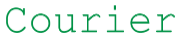
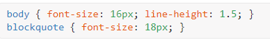
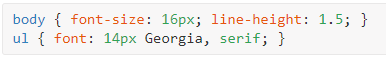

Работа с типографикой
Существуют тысячи шрифтов, которые предназначены для оформления текстов. При этом следует отметить, что число шрифтов, применяемых для набора текста на сайтах, существенно ниже. Конечно, ничто не мешает выбрать и задать, например, для заголовка, вычурный шрифт, установленный на локальном компьютере. Но если такого шрифта на компьютере пользователя нет, то текст будет отображаться шрифтом, установленным в браузере по умолчанию. Получается, что усилия разработчика пропадут даром.
Есть три способа избежать этого:
-
Создать надпись в графическом редакторе и вставить её на веб-страницу как изображение.
Этот метод подключает всю мощь графических систем по управлению текстом, при этом допустимо включать любые шрифты. Из недостатков самый главный состоит в том, что рисунок так просто не изменишь, и придётся вновь обращаться к редактору. Так что рисунки в качестве текста применяются только для создания небольших и постоянных надписей вроде заголовков.
-
Загрузить пользовательский шрифт.
Действительно, если можно загружать по сети изображения, почему бы то же самое не проделать и со шрифтами?
-
Воспользоваться стандартными шрифтами, встроенными в браузер и операционную систему.
Этот способ является пока наиболее распространённым для указания шрифта на веб-странице.
Возможность встраивания шрифтов даёт нам доступ к бесчисленным новым шрифтам, но при этом также важно знать основные принципы типографики.
Гарнитура и шрифт
Термины «гарнитура» и «шрифт» часто взаимозаменяемы, что приводит к путанице. Вот что означает каждый термин.
Гарнитура - это то, что мы видим. Это художественное впечатление от того, как текст выглядит, воспринимается и читается.
Шрифт - представляет собой файл, содержащий гарнитуру. Использование шрифта позволяет компьютеру получить доступ к гарнитуре.
Семейства шрифтов
Всё многообразие шрифтов (несмотря на то, что они совершенно разные по виду и форме) можно поделить на определённые группы:
- шрифты с засечками - serif
- шрифты без засечек - sans-serif
- моноширинные шрифты - monospace
- декоративные шрифты - cursive и fantasy
Шрифты с засечками
Такие шрифты характеризуются засечками — поперечными элементами на концах букв, которые называются ещё серифами (serif)

Шрифты с засечками активно применяются для набора основного текста, поскольку это облегчает восприятие больших объемов текста.
Засечки заставляют взгляд читателя скользить вдоль них и одновременно разделяют отдельные буквы, чтобы они не сливались между собой. Также такие шрифты могут использоваться и для написания заголовков.
На экране монитора при уменьшении размера текста шрифт с засечками начинает хуже передавать начертание, поэтому для мелких надписей рекомендуется воспользоваться шрифтом без засечек.
Шрифты без засечек
Шрифты без засечек, называемые также гротесками или рублеными шрифтами, не имеют серифов на концах букв, поэтому для их обозначения используется термин sans-serif (в переводе с французского — «без серифа»).
На сайтах подобные шрифты нашли применение в самых разнообразных элементах: заголовках, надписях на кнопках форм, основном тексте и т. д. Преимущество шрифта без засечек состоит в том, что он одинаково хорошо передаёт текст как в крупном, так и в мелком начертании
Следует понимать, что удобочитаемость текста зависит от множества факторов, которые определяются шрифтом, разрешением и размером монитора, настройками системы, длиной строки и т. д. Поэтому решение о выборе шрифтов с засечками или без можно сделать только исходя из готового макета веб-страницы.
Моноширинные шрифты
Все символы моноширинного шрифта имеют одинаковую ширину, независимо от начертания буквы отводимое под неё пространство не меняется

Такой подход имеет как преимущества, так и недостатки. Из достоинств следует отметить то, что текстом удобно манипулировать, если требуется точно разместить одну надпись под другой. Благодаря тому, что символы выступают в роли кирпичиков одинаковых размеров, можно строить из них целые текстовые картины. Такого рода искусство до сих пор популярно, и подобные «изображения» встречаются порой в Интернете.
Опять же в силу того, что все символы одинаковы по ширине, это накладывает отпечаток на комфортность чтения текста. Понятно, что хотя буквы «Г» и «Ш» могут быть равными по размеру, это приводит к излишнему растягиванию символов, что идёт в ущерб их красоте и элегантности.
Что касается применения моноширинного шрифта на сайте, то обычно он используется, когда требуется привести код программы. Добавляя пробелы перед строками, их можно выравнивать между собой, а это позволяет лучше ориентироваться в коде.
К моноширинным шрифтам, применяемым на сайтах, относится шрифт Courier и его разновидности.
Декоративные шрифты
Эту категорию составляют шрифты, не вошедшие в предыдущие описания. Подобные шрифты используют для создания определённого настроения на сайте, поскольку в большинстве своем они трудны для восприятия и чтения.

Наиболее часто декоративные шрифты применяются для заголовков, текстовых выделений и, как правило, никогда для основного текста
В Windows для размещения на сайте обычно применяется декоративный шрифт Comic Sans MS.
Свойства шрифтов.
Определяет цвет текста элемента.
Свойство color принимает одно значение цвета, но в разных форматах.
Эти форматы включают: ключевые слова, шестнадцатеричные значения и значения RGB, RGBa, HSL и HSLa. Шестнадцатеричные значения являются наиболее распространёнными, поскольку они обеспечивают максимальный контроль с минимальными усилиями.
CSS, необходимый для изменения цвета всего текста в пределах элемента <html> на странице, будет выглядеть так:
Определяет, какой шрифт использовать.
Список шрифтов может включать одно или несколько названий, разделённых запятой.
Первый указанный шрифт, начиная слева, является основным выбранным шрифта. Если первый шрифт недоступен, после него указываются альтернативные шрифты в порядке предпочтения слева направо.
Если в имени шрифта содержатся пробелы, например, Trebuchet MS , оно должно заключаться в одинарные или двойные кавычки.
Кроме того, последний шрифт должен быть ключевым словом, который обозначает системный шрифт по умолчанию для указанного типа, наиболее популярные это sans-serif и serif.
Поскольку свойство font-family наследуется всеми дочерними элементами HTML, вы можете применить шрифт для всего HTML-документа, используя его для предка всех элементов HTML: элемента <body>.
В данном случае Helvetica Neue является предпочтительным шрифтом для отображения. Если этот шрифт недоступен или не установлен на указанном устройстве, будет использоваться следующий шрифт в списке — Helvetica и так далее.
Определяет размер шрифта элемента.
Свойство font-size даёт возможность установить размер текста, используя типовые значения размера, включая пиксели, em, проценты, пункты или ключевые слова.
Сам размер шрифта или, как он ещё называется в типографике — кегль, определяется как высота от базовой линии до верхней границы кегельной площадки
Имейте в виду, что установка размера шрифта 16px не делает каждую букву высотой 16px. Фактический размер каждой буквы зависит от используемого font-family. Шрифт Arial выглядит крупнее, чем шрифт Times того же размера, а шрифт Courier New чуть меньше шрифта Arial. Легко заметить, что при одинаковых заданных размерах текст различается как по высоте, так и по насыщенности.
Значение размера может быть задано несколькими способами:
-
Набор констант: хх-small, x-small, small, medium, large, x-large, xx-large
-
- указывает размер, который называется абсолютным. По правде говоря, он не совсем абсолютный, поскольку зависит от настроек браузера и операционной системы.
-
Набор констант: larger, smaller
-
- устанавливает размеры шрифта относительно родителя.
На практике константы применяются редко, а в основном используются допустимые единицы CSS: em (высота шрифта элемента), пункты (pt), пиксели (рх) и др.
Пиксели
Пиксель — это элементарная точка устройства. Размеры элементов веб-страницы, вроде изображений и колонок преимущественно делаются именно в пикселях, поэтому имеет смысл задавать и шрифт в этих единицах.
Пункты
Пожалуй, самая распространённая единица для указания размера шрифта. Многие люди привыкли задавать размер текста в текстовых редакторах, например 12. А что это число означает, не понимают. Так это и есть пункты, пожалуй, единственная величина не из метрической системы измерения, которая используется у нас повсеместно. И все благодаря текстовым редакторам и издательским системам.
em
Эта единица показывает размер шрифта текущего элемента и он всегда равен 1em независимо от реального размера текста. Зачем тогда использовать? Em связан с размером шрифта родительского элемента и мы можем легко изменять размер текста самого элемента в большую (1.2em) или меньшую сторону (0.8em) без дополнительных вычислений. В каком-то смысле это является синонимом процентной записи.
rem
При использовании множественных вложений одних элементов в другие, с em легко запутаться в вычислениях. Например, если уменьшить размер шрифта до 0.8em, а потом у дочернего элемента увеличить до 1.2em, то будет ли текст одного размера? Единица rem привязана только к корневому элементу и таким образом не зависит от уровня вложения элементов.
Определяет начертание шрифта — обычное, курсивное или наклонное.
Это свойство принимает три ключевых слова:
-
normal - возвращает текст к своему обычному стилю
-
italic - задаёт текст курсивным
-
oblique - наклонное начертание. Образуется путем наклона обычных знаков вправо (обычно не используется)
Определяет представление строчных букв прописными уменьшенного размера.
Это происходит не часто, но иногда текст необходимо установить небольшими заглавными буквами, также известными как капитель.
Принимает два значения: normal и small-caps, которые используются для переключения шрифтов между капителью и обычным текстом.
-
normal - Оставляет регистр символов исходным, заданным по умолчанию.
-
small-caps - Модифицирует все строчные символы как заглавные уменьшенного размера.
Устанавливает насыщенность шрифта.
В зависимости от используемого font-family, существует целый ряд насыщенности шрифта, доступных от 100 до 900:
Очень немногие шрифты предлагают все девять насыщенностей. Перед применением числового значения мы должны проверить и посмотреть, пойдёт ли используемый шрифт с указанной насыщенностью. Попытка использовать число, которое не доступно для данного шрифта, приведёт эти стили к ближайшему значению.
Например, шрифт Times New Roman содержит две насыщенности: 400 (нормальная) и 700 (жирная). Попытка использовать 900 установит шрифт в ближайшую насыщенность, 700 в данном случае.
В основном присутствуют 400 (нормальный) и 700 (жирный), а иногда 300 (лёгкий) и 500 (средний).
Также допустимо использовать ключевые слова: bold — полужирное, bolder — жирное, lighter — светлое, normal — нормальное начертание. Из этих ключевых слов рекомендуется в первую очередь задействовать normal и bold , чтобы изменить текст от обычного до жирного и наоборот. Вместо использования ключевых слов bolder или lighter лучше применять числовое значение для более точного управления.
Определяет высоту каждой строки для блочных элементов
Не следует путать с межстрочным расстоянием в большинстве графических программ (вроде Photoshop), которое определяет пространство между строками в абзаце. Несмотря на то, что они оба выполняют одну и ту же задачу ( интервал между строк текста), делают они это по-разному.
Для внедряемых строчных элементов (вроде <img>) свойство line-height не оказывает никакого эффекта. Для остальных строчных элементов line-height задаёт высоту, которая используется для расчёта высоты строки блока.
Свойство line-height использует следующие единицы: px, em, % и безразмерные числа, вроде 1.5.
Эти безразмерные значения в основном действуют как проценты. Таким образом, 150% равно 1.5. Последнее является просто более компактным и читаемым.
Почему важно line-height
Целью line-height является определение комфортного расстояния между строк для вашего текста. Поскольку удобочитаемость зависит от размера текста, рекомендуется использовать динамическое значение связанное с размером текста. Использование px поэтому и не рекомендуется, так как пиксели определяют статическое значение.
В некоторых случаях использование пикселей действительно пригодится (если вы желаете выровнять текст по вертикали в соответствии с другим элементом, а не в зависимости от размера шрифта).
Поскольку применение % или em может дать неожиданный результат, рекомендуемый метод связан с безразмерными числами:
-
для основного текста line-height рекомендуется, как 1.5 от размера текста;
-
для заголовков line-height рекомендуется значение 1.2.
Вычисленная высота строки будет, таким образом, 16 * 1.5 = 24px.
Наследование line-height
Поскольку свойство line-height наследуется дочерними элементами, оно будет оставаться постоянным, независимо от того, какой font-size впоследствии применяется.

Элемент <blockquote> будет иметь высоту строки 27px.
Универсальное свойство - позволяет одновременно задать несколько характеристик шрифта и текста.
Свойство font группирует следующие свойства:
font: font-style font-variant font-weight font-size line-height font-family
- font-style
- font-variant
- font-weight
- font-size
- line-height
- font-family
Таким образом, можно определить шесть свойств через одно единственное:
Значения должны быть написаны именно в таком порядке: слева направо без применения запятых (кроме названий шрифтов, поскольку свойство font-family задействует запятые). И должна быть косая черта (/) между font-size и line-height.
В качестве обязательных значений свойства font указывается размер шрифта font-size и его семейство font-family. Остальные значения являются опциональными и задаются при желании.
Таким образом, можно опустить определение других свойств, если вы намерены сохранить их значения по умолчанию:
Поскольку здесь font-style и font-variant не определены, они будут использовать значение по умолчанию normal.
Осторожно! Если вы ранее определили одно из свойств шрифта и используете впоследствии свойство font, то оно перепишет заданные ранее значения.

В этом свойстве font, line-height не было определено, поэтому потеряет значение своего предка 1.5 и вернётся к своему значению по умолчанию (обычно 1.2).